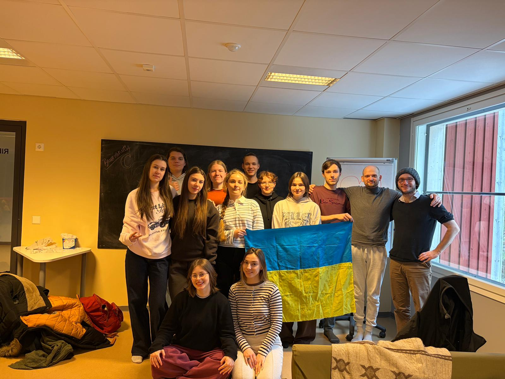
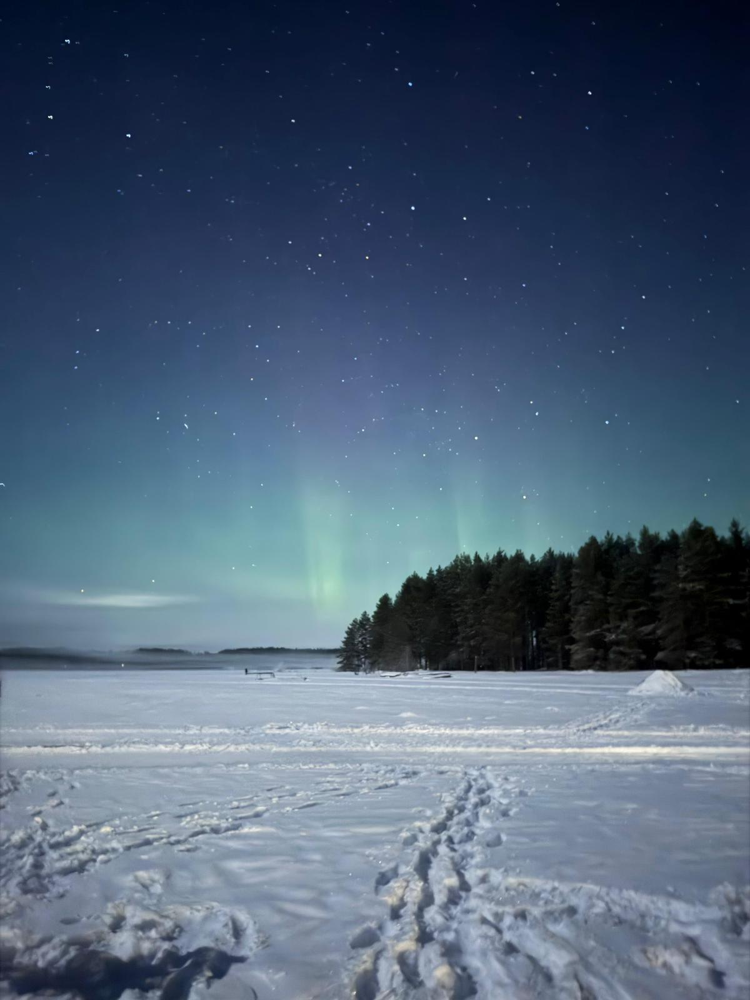
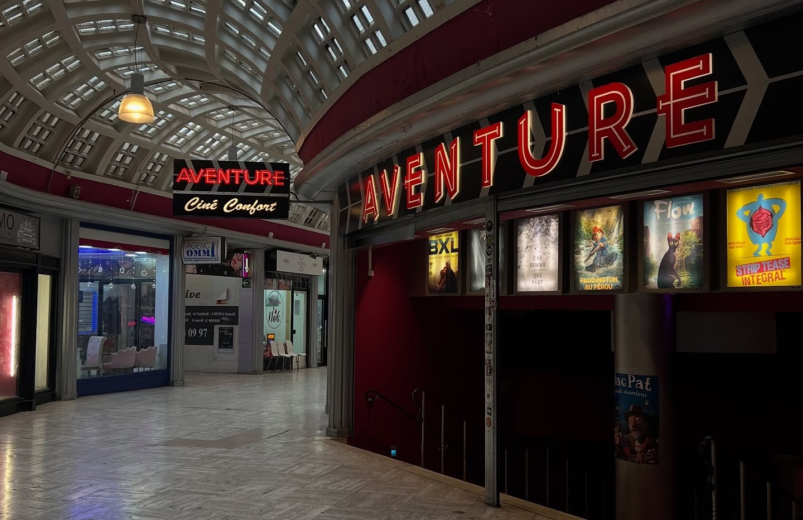
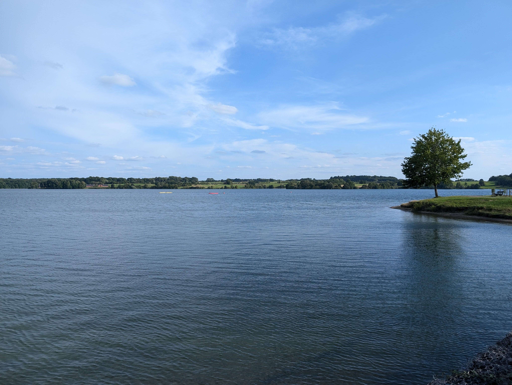
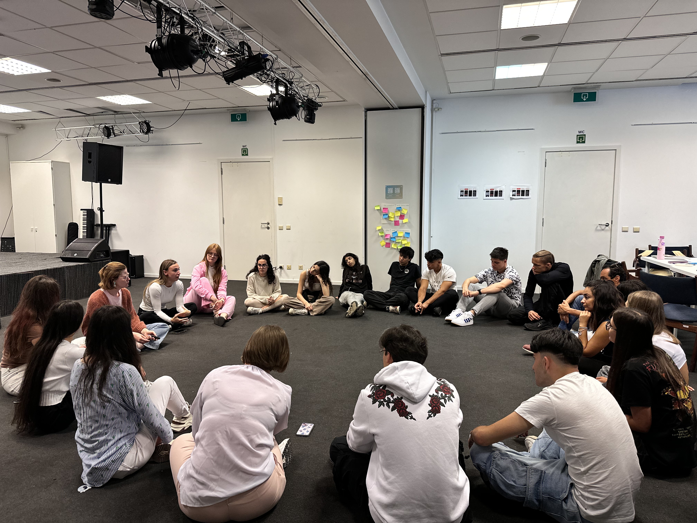
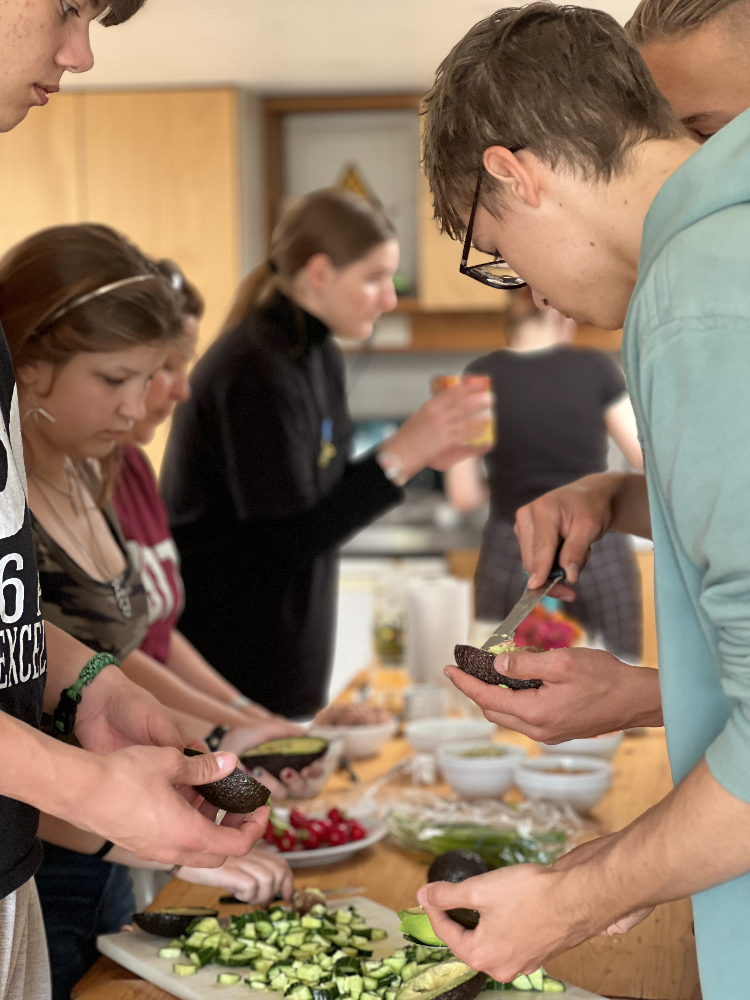
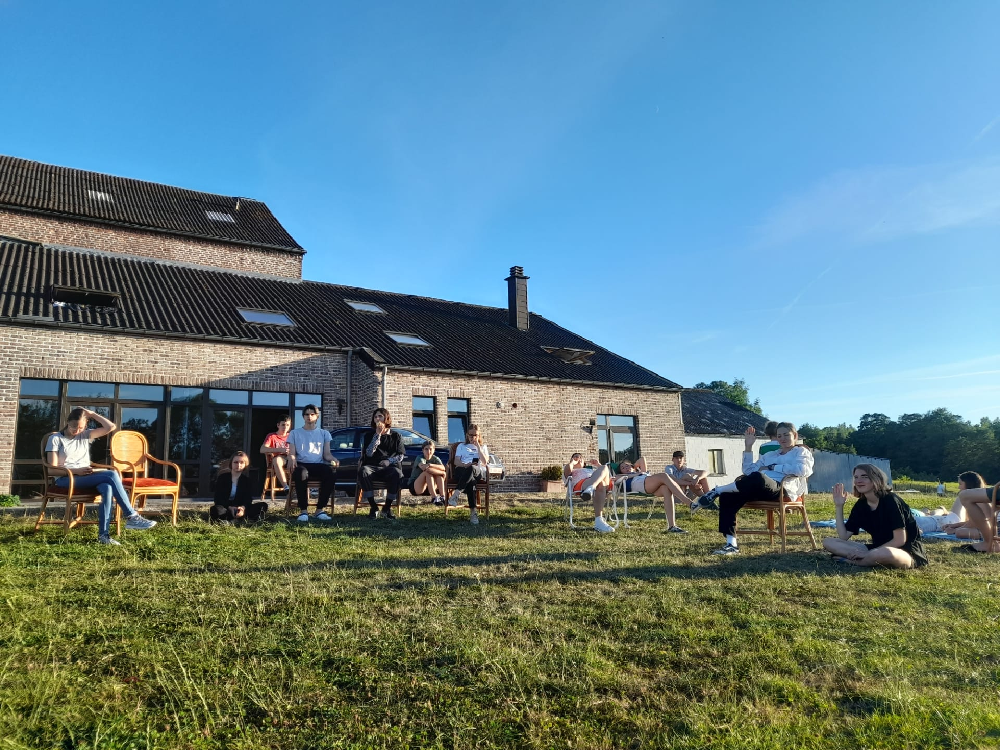
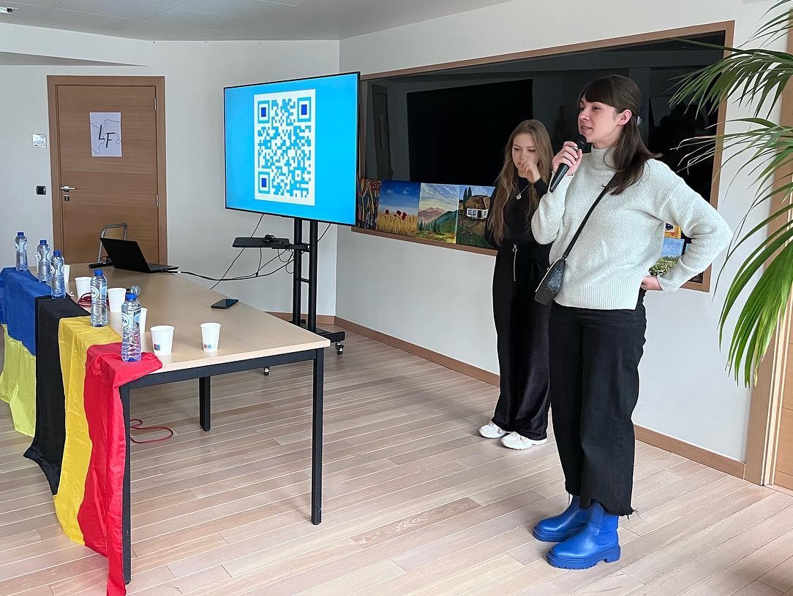
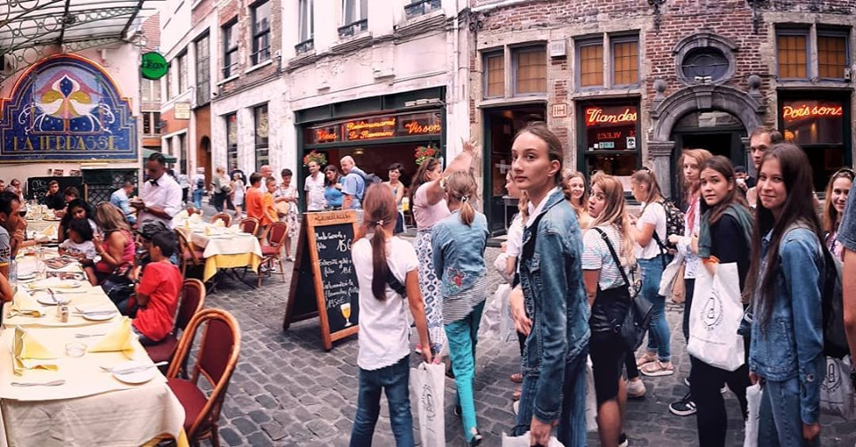

A Few of Our Many Projects
Artivism activities, environmental clean-ups, a volleyball day, the organization of Ukraine’s Independence Day celebration, a seminar in Norway… These are just a few of the projects that keep our non-profit organization vibrant and active. Follow us on Instagram and Facebook to stay up to date with all our activities. Here are a few highlights:
February 2026 - Erasmus+ in Finland
From February 23 to March 1, 2026, our group of young Ukrainians from Lingua Fortuna took part in an Erasmus+ exchange at the Piispala Youth Centre in Kannonkoski, Finland. There, we joined participants from Finland and Italy for a week centered on the theme Winterland Wellbeing, dedicated to well-being in all its forms.
- Throughout the stay, we took part in workshops and activities focused on mental, physical, and emotional well-being, including yoga sessions, personal development exercises, and other practices aimed at better understanding ourselves and taking care of our well-being.
- The exchange was also marked by rich intercultural moments. We organized themed evenings dedicated to Ukrainian, Italian, and Finnish cultures, fostering encounters, sharing, and discovery.
- Between winter activities, new friendships, and snowy landscapes, the experience was unforgettable, especially thanks to observing the Northern Lights, which left a lasting impression.
- This trip was a unique opportunity for learning, human connection, and discovery in an exceptional natural setting.


August 2025 - Cine-Club and Cinema Workshop
Throughout the year, Lingua Fortuna, with the support of La Médiathèque Nouvelle, organizes film screenings followed by debates and discussion sessions. From August 18 to 22, 2025, the first edition of the “Ciné Club” workshop took place. The program included:
- The history of Belgian cinema;
- Key stages in the creation of a film;
- Handling technical equipment (camera, sound, etc.);
- Screenwriting;
- Shooting a short film;

This short film was presented in October 2025 at the Ukrainian Voices community center. The project will continue throughout the 2025/2026 year!
August 2025: Summer Camp at the Lacs de l’Eau d’Heure
From August 1 to 6, 2025, several children aged 8 to 12 enjoyed the lush surroundings of Ferme de Manensart, where they created, explored, and reconnected with nature.
Program highlights:
- Sports, creative, and fun activities;
- Moments of sharing and group games;
- Healthy meals;
- Swimming in the lakes and tree climbing;

A heartfelt thank you to the Heroes for Good Foundation for supporting this project!
July 2025: Erasmus+ Project in Brussels – Getting Out of the Digital Box
From July 7 to 13, 2025, Lingua Fortuna hosted around thirty young participants from Finland, Ukraine, and Italy in Brussels. Thanks to the Erasmus+ program, this youth exchange, organized in collaboration with the Finnish youth association Piispala and the Italian association Polisportiva, gave participants the chance to connect around the theme of digital transformation and its impact on everyday life.
Program highlights:
- Sharing best practices for disconnecting from screens;
- Visit to Microsoft offices;
- Interactive discovery games across Brussels;
- Exploration of Belgian culture;
- Art therapy and creative workshops (sculpture);
- Inspiring discussions on shared themes;

A truly emotion-filled week. Special thanks to Ukrainian Voices for their support during this exchange!
June 2025: Weekend by the sea
From June 7 to 9, 2025, in the beautiful and calming setting of De Haan, a weekend dedicated to the theme of anxiety allowed students to relax and recharge before their exams.
Program highlights:
- Breathing activities;
- Cooking workshop;
- Cake glazing workshop;
- Walks on the beach;
- Art therapy;
- Group discussions;
- Board games;

This project was supported by the Heroes for Good Foundation.
February–March 2024: Erasmus+ Project in Finland – Winter Voices For Change
From February 24 to March 2, 2024, a group of ten young participants aged 16 to 18 from Lingua Fortuna traveled to Finland for the Winter Voices For Change project.
Program highlights:
- Inspiring discussions about the world of tomorrow;
- Cultural and sports activities;
- Walks in the snow under the Northern Lights
An unforgettable week and the beginning of a beautiful adventure.
Winter 2023: Winter Camp in Liège
In the winter of 2023, our youth council gathered in one of Belgium’s largest and most vibrant cities – Liège, known for its rich cultural life.
Over two days, participants exchanged ideas about new projects, reflected on their practical implementation, and strengthened team cohesion.
The camp concluded with a visit to the Liège Museum, offering a wonderful insight into the city’s historical and cultural heritage.
Summer 2022: Summer Camp at the Lacs de l’Eau d’Heure
In the summer of 2022, our organization organized a youth camp on the beautiful shores of the Lacs de l’Eau d’Heure.
Program highlights:
- Team games;
- Creative workshops (sculpting, drawing);
- Swimming in the lakes;
- Cycling excursions;
- French lessons and language practice with native speakers;
- Sports activities;
- Meditation sessions;
- Collective cooking;
- Discussions on current important topics (ecology, sexism)

February 2022: Student Day
On February 18, 2022, Lingua Fortuna, with the support of Promote Ukraine, organized an event called Student Day. The goal was to help Ukrainian students better understand the specificities and administrative procedures related to higher education in Belgium.
Program highlights:
- Explanations about diploma equivalence (Fédération Wallonie-Bruxelles);
- Presentations of universities and higher education institutions in Belgium;
- Testimonials from Ukrainian students living in Belgium.

The event lasted two hours, during which members of our youth council and invited speakers presented all aspects of enrolling in Belgian higher education institutions.
August 2018: First Summer Camp at Manensart Farm
On August 5, 2018, Lingua Fortuna launched its very first one-week summer camp, held at Manensart Farm, a peaceful and green corner of Belgium’s Hainaut province.
The project aimed to introduce Belgium to 20 young participants from across Ukraine and to offer them a linguistic and cultural exchange experience with Belgian youth.
Program highlights:
- Discovering the region through games (Chimay, Neptune Caves, Fondry des Chiens, etc.);
- Theatre workshops and a final performance during a barbecue evening;
- Animal-assisted therapy workshop with ASBL Bella et Compagnie;
- Sports walks and hikes;
- Music workshop;

It was a week full of experiences and discoveries! The team consisted of seven full-time staff members, responsible for teaching, activities, and cooking.
At that time, our main goal was to promote cultural and linguistic exchange between Ukraine and Belgium, an objective that remains relevant today, though now in a very different context.